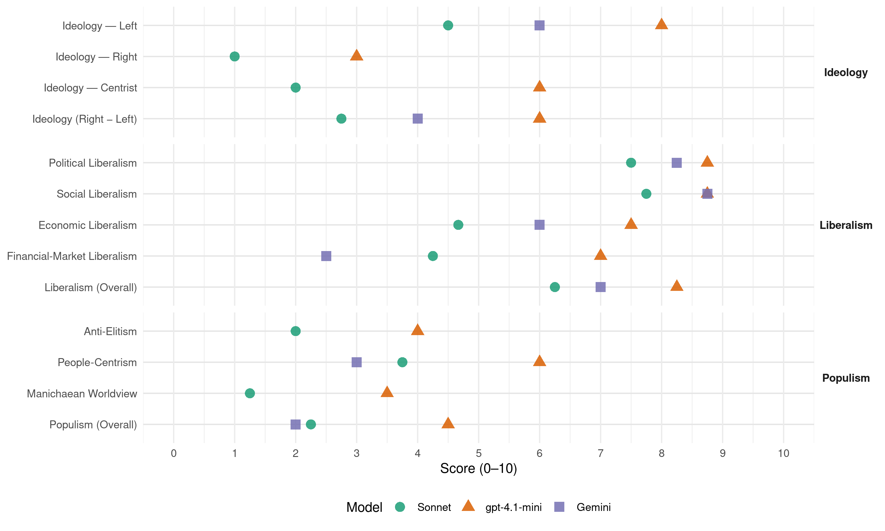

MDG (Norway, 2017)
manifesto_id 12110_201709
Get full text: This site shows derived annotations and short verbatim quotes only. The full manifesto text is © Manifesto Project / WZB — obtain it via manifesto-project.wzb.eu using the manifesto_id above.
Headline scores
| Dimension | Sonnet | gpt-4.1-mini | Gemini |
|---|---|---|---|
| Populism (Overall) | 2.2 | 4.5 | 2.0 |
| Anti-Elitism | 2.0 | 4.0 | – |
| People-Centrism | 3.8 | 6.0 | 3.0 |
| Manichaean Worldview | 1.2 | 3.5 | – |
| Ideology (Right − Left) | 2.8 | 6.0 | 4.0 |
| Liberalism (Overall) | 6.2 | 8.2 | 7.0 |
| Political Liberalism | 7.5 | 8.8 | 8.2 |
| Social Liberalism | 7.8 | 8.8 | 8.8 |
| Economic Liberalism | 4.7 | 7.5 | 6.0 |
| Financial-Market Liberalism | 4.2 | 7.0 | 2.5 |
Evidence per dimension
Economic Liberalism
Gemini · score 4.0 · mixed · chunk 1
“redusere det materielle forbruket”
De Grønne vil: Redusere det materielle forbruket i Norge til et bærekraftig
Gemini · score 4.0 · mixed · chunk 2
“et sterkt tollvern”
hovedsakelig finansiert av prisen på produktene ved et sterkt tollvern. Sikre at multinasjonale
Gemini · score 6.0 · verified · chunk 3
“for å sikre fri konkurranse”
kontrollere både forlag, distribusjon og bokhandel, for å sikre fri konkurranse. Stille krav om at offentlig støttede
Gemini · score 6.0 · verified · chunk 4
“rekruttere nødvendig og kvalifisert arbeidskraft fra”
Arbeidsinnvandring er positivt for norske bedrifter, som slik kan rekruttere nødvendig og kvalifisert arbeidskraft fra utlandet.
gpt-4.1-mini · score 8.0 · verified · chunk 1
“De Grønne vil bruke skatter og avgifter til å premiere miljøriktige valg, samtidig som vi vil bruke skattesystemet til å omfordele og redusere økonomisk ulikhet”
For å lykkes med et grunnleggende grønt skifte er vi avhengig av at innbyggerne og næringslivet er med. De Grønne vil bruke skatter og avgifter til å premiere miljøriktige valg, samtidig som vi vil bruke skattesystemet til å omfordele og redusere økonomisk ulikhet.
gpt-4.1-mini · score 7.0 · verified · chunk 2
“Gjøre inntektsskatten mer progressiv slik at lave inntekter får mindre skatt, mens høye inntekter får økt skatt”
De Grønne vil: Gjøre inntektsskatten mer progressiv slik at lave inntekter får mindre skatt, mens høye inntekter får økt skatt. Øke og målrette avgifter på miljøskadelig forbruk og produksjon, og redusere avgifter på miljøvennlige alternativer og avgifter som hindrer innovasjon og jobbskaping.
gpt-4.1-mini · score 8.0 · verified · chunk 3
“Stimulere til at privat kapital i større grad investeres i arbeidsplasser, forskning og teknologiutvikling framfor i eiendom og boliger”
Prioritere næringer der Norge har konkurransefortrinn. Stimulere til at privat kapital i større grad investeres i arbeidsplasser, forskning og teknologiutvikling framfor i eiendom og boliger. Gjennomføre flere prøveprosjekter med redusert arbeidstid.
gpt-4.1-mini · score 7.0 · verified · chunk 4
“Arbeide for et enkelt og forutsigbart regelverk for arbeidsinnvandring, for å sikre raskere tilgang på kvalifisert arbeidskraft”
Arbeidsinnvandring er positivt for norske bedrifter, som slik kan rekruttere nødvendig og kvalifisert arbeidskraft fra utlandet. Norge er et rikt land med et attraktivt arbeidsmarked, og EØS-avtalen har bidratt til økt arbeidsinnvandring. De Grønne ønsker å legge til rette for arbeidsinnvandring også fra land utenfor EØS-området, med utgangspunkt i norske bedrifters behov for kompetanse og arbeidskraft. Det fordrer et enkelt og forutsigbart regelverk for bedrifter og arbeidstakere, samt redusert saksbehandlingstid.
Sonnet · score 4.0 · mixed · chunk 1
“Forebygge skadelig spekulasjon og utlånsvirksomhet gjennom strengere regulering”
Forebygge skadelig spekulasjon og utlånsvirksomhet gjennom strengere regulering av banker og finansinstitusjoner.
Sonnet · score 4.0 · verified · chunk 2
“aktiv næringspolitikk basert på aktive politiske prioriteringer”
Føre en næringspolitikk basert på aktive politiske prioriteringer av sektorer og teknologier der Norge har naturlig fortrinn.
Sonnet · score 5.0 · verified · chunk 3
“Hindre at samme eiere kan kontrollere både forlag”
Hindre at samme eiere kan kontrollere både forlag, distribusjon og bokhandel, for å sikre fri konkurranse.
Sonnet · score 5.0 · verified · chunk 4
“sosial dumping”
De Grønne ønsker en planmessig innsats mot sosial dumping, både på nasjonalt og europeisk nivå
Financial-Market Liberalism
Gemini · score 3.0 · verified · chunk 1
“avgift på finanstransaksjoner, aksjehandel og valutatransaksjoner”
Innføre avgift på finanstransaksjoner, aksjehandel og valutatransaksjoner med innslagspunkt og skattesats innrettet
Gemini · score 2.0 · verified · chunk 2
“avgift på finanstransaksjoner”
momsen på kjøtt. Innføre avgift på finanstransaksjoner, aksjehandel og valutatransaksjoner
gpt-4.1-mini · score 7.0 · verified · chunk 1
“Trekke SPU ut av alle investeringer i fossil energi. At SPU skal investere minst fem prosent direkte i infrastruktur for fornybar energi”
De Grønne vil: Trekke SPU ut av alle investeringer i fossil energi. At SPU skal investere minst fem prosent direkte i infrastruktur for fornybar energi, også i unotert infrastruktur, og etterstrebe investeringer i lav- og mellom-inntektsland.
gpt-4.1-mini · score 7.0 · verified · chunk 2
“Krever at selskaper som Statens pensjonsfond utland investerer i utviser åpenhet om selskapsstruktur, skatteinnbetalinger og eierforhold”
Krever at selskaper som Statens pensjonsfond utland investerer i utviser åpenhet om selskapsstruktur, skatteinnbetalinger og eierforhold, samt regnskapsrapportering på land-for-land-nivå. Bruke norske eierskap gjennom Statens pensjonsfond utland aktivt til å bekjempe skattetilpasning og kapitalflukt.
Sonnet · score 3.0 · verified · chunk 1
“Innføre avgift på finanstransaksjoner, aksjehandel og valutatransaksjoner”
Innføre avgift på finanstransaksjoner, aksjehandel og valutatransaksjoner med innslagspunkt og skattesats innrettet for å ramme skadelig spekulasjon.
Sonnet · score 3.0 · verified · chunk 2
“avgift på finanstransaksjoner, aksjehandel og valutatransaksjoner”
Innføre avgift på finanstransaksjoner, aksjehandel og valutatransaksjoner med innslagspunkt og skattesats innrettet for å ramme skadelig spekulasjon.
Sonnet · score 5.0 · verified · chunk 3
“privat kapital i større grad investeres i arbeidsplasser”
Stimulere til at privat kapital i større grad investeres i arbeidsplasser, forskning og teknologiutvikling framfor i eiendom og boliger.
Sonnet · score 6.0 · verified · chunk 4
“finansiell åpenhet”
Ta initiativ til en ny internasjonal konvensjon om finansiell åpenhet, og utvide kravene til land-for-land-rapportering
Political Liberalism
Gemini · score 8.0 · verified · chunk 1
“styrke lokaldemokratiet, sivilsamfunnet og frivillige organisasjoner”
De Grønne vil derfor styrke lokaldemokratiet, sivilsamfunnet og frivillige organisasjoner og sørge for åpne og inkluderende
Gemini · score 8.0 · verified · chunk 2
“demokrati og medborgerskap”
vektlegging av bærekraftig utvikling, kritisk tenkning, demokrati og medborgerskap, det flerkulturelle
Gemini · score 8.0 · verified · chunk 3
“I en liberal rettsstat er alle uskyldige”
kampen mot politisk ekstremisme. I en liberal rettsstat er alle uskyldige til det motsatte er bevist, og alle skal
Gemini · score 9.0 · verified · chunk 4
“I en liberal rettsstat er alle uskyldige”
kampen mot politisk ekstremisme. I en liberal rettsstat er alle uskyldige til det motsatte er bevist, og alle skal
gpt-4.1-mini · score 9.0 · verified · chunk 1
“Demokrati er mer enn stemmerett. Det forutsetter en spredning av makt i hele samfunnet”
Demokrati er mer enn stemmerett. Det forutsetter en spredning av makt i hele samfunnet. Makt utøves gjennom ytringer, organisasjonsliv og økonomiske strukturer. De Grønne vil bekjempe maktkonsentrasjon ved å styrke lokaldemokratiet, sivilsamfunnet og jobbe for jevnere fordeling av ressurser og kapital.
gpt-4.1-mini · score 8.0 · verified · chunk 2
“Stortinget må ha en nullvisjon for tap av matjord, og at god matjord kun kan bygges på etter nasjonal godkjenning”
Å sikre at matjord brukes til å produsere mat er et nasjonalt og viktig samfunnsansvar. Det handler om egen matsikkerhet, men også om å bidra med vårt til den globale matforsyningen. De Grønne mener Stortinget må ha en nullvisjon for tap av matjord, og at god matjord kun kan bygges på etter nasjonal godkjenning med strenge kriterier.
gpt-4.1-mini · score 9.0 · verified · chunk 3
“Kunnskap er en viktig drivkraft for deltakelse, likestilling og demokrati”
Kunnskap er en viktig drivkraft for deltakelse, likestilling og demokrati. De Grønne vil verne om gratisprinsippet og at alle skal ha tilgang til utdanning. Vi vil sikre profesjonsutdanningenes egenart gjennom å legge til rette for tett kontakt med praksisfeltet og aktuelle forskningsmiljøer.
gpt-4.1-mini · score 9.0 · verified · chunk 4
“I en liberal rettsstat er alle uskyldige til det motsatte er bevist”
Det er et Norge der vi deler ansvar og har respekt for hverandre. Et slikt samfunn forutsetter åpenhet og et effektivt og velfungerende rettssystem som har tillit hos folk flest. I en liberal rettsstat er alle uskyldige til det motsatte er bevist, og alle skal møtes med respekt og likeverd. I møtet med større internasjonalt press og usikkerhet vil De Grønne aktivt ivareta og styrke enkeltmenneskets rettssikkerhet.
Sonnet · score 8.0 · verified · chunk 1
“Frie, uavhengige medier og en opplyst offentlig debatt”
Frie, uavhengige medier og en opplyst offentlig debatt er avgjørende for et velfungerende demokrati.
Sonnet · score 6.0 · verified · chunk 2
“opplyst demokratisk debatt kan finne sted”
Jobbe for større åpenhet i handelsforhandlinger slik at en opplyst demokratisk debatt kan finne sted.
Sonnet · score 8.0 · verified · chunk 3
“demokrati og medborgerskap, det flerkulturelle samfunnet”
Ludvigsen-utvalgets vektlegging av bærekraftig utvikling, kritisk tenkning, demokrati og medborgerskap, det flerkulturelle samfunnet, folkehelse og livsmestring.
Sonnet · score 8.0 · verified · chunk 4
“enkeltmenneskets rettssikkerhet”
vil De Grønne aktivt ivareta og styrke enkeltmenneskets rettssikkerhet. Den enkeltes mulighet til å uttrykke og utfolde seg
Liberalism (Overall)
Gemini · score 6.0 · verified · chunk 1
“styrke lokaldemokratiet, sivilsamfunnet og frivillige organisasjoner”
De Grønne vil derfor styrke lokaldemokratiet, sivilsamfunnet og frivillige organisasjoner og sørge for åpne og inkluderende
Gemini · score 6.0 · verified · chunk 2
“demokrati og medborgerskap”
vektlegging av bærekraftig utvikling, kritisk tenkning, demokrati og medborgerskap, det flerkulturelle
Gemini · score 8.0 · verified · chunk 3
“I en liberal rettsstat er alle uskyldige”
kampen mot politisk ekstremisme. I en liberal rettsstat er alle uskyldige til det motsatte er bevist, og alle skal
Gemini · score 8.0 · verified · chunk 4
“I en liberal rettsstat er alle uskyldige”
kampen mot politisk ekstremisme. I en liberal rettsstat er alle uskyldige til det motsatte er bevist, og alle skal
gpt-4.1-mini · score 8.0 · verified · chunk 1
“Demokrati er mer enn stemmerett. Det forutsetter en spredning av makt i hele samfunnet”
Demokrati er mer enn stemmerett. Det forutsetter en spredning av makt i hele samfunnet. Makt utøves gjennom ytringer, organisasjonsliv og økonomiske strukturer. De Grønne vil bekjempe maktkonsentrasjon ved å styrke lokaldemokratiet, sivilsamfunnet og jobbe for jevnere fordeling av ressurser og kapital.
gpt-4.1-mini · score 8.0 · verified · chunk 2
“Gjøre inntektsskatten mer progressiv slik at lave inntekter får mindre skatt, mens høye inntekter får økt skatt”
De Grønne vil: Gjøre inntektsskatten mer progressiv slik at lave inntekter får mindre skatt, mens høye inntekter får økt skatt. Øke og målrette avgifter på miljøskadelig forbruk og produksjon, og redusere avgifter på miljøvennlige alternativer og avgifter som hindrer innovasjon og jobbskaping.
gpt-4.1-mini · score 9.0 · verified · chunk 3
“Kunnskap er en viktig drivkraft for deltakelse, likestilling og demokrati”
Kunnskap er en viktig drivkraft for deltakelse, likestilling og demokrati. De Grønne vil verne om gratisprinsippet og at alle skal ha tilgang til utdanning. Vi vil sikre profesjonsutdanningenes egenart gjennom å legge til rette for tett kontakt med praksisfeltet og aktuelle forskningsmiljøer.
gpt-4.1-mini · score 8.0 · verified · chunk 4
“I en liberal rettsstat er alle uskyldige til det motsatte er bevist”
Det er et Norge der vi deler ansvar og har respekt for hverandre. Et slikt samfunn forutsetter åpenhet og et effektivt og velfungerende rettssystem som har tillit hos folk flest. I en liberal rettsstat er alle uskyldige til det motsatte er bevist, og alle skal møtes med respekt og likeverd. I møtet med større internasjonalt press og usikkerhet vil De Grønne aktivt ivareta og styrke enkeltmenneskets rettssikkerhet.
Sonnet · score 6.0 · verified · chunk 1
“Frie, uavhengige medier og en opplyst offentlig debatt”
Frie, uavhengige medier og en opplyst offentlig debatt er avgjørende for et velfungerende demokrati.
Sonnet · score 5.0 · verified · chunk 2
“Gjøre inntektsskatten mer progressiv”
De Grønne vil: Gjøre inntektsskatten mer progressiv slik at lave inntekter får mindre skatt, mens høye inntekter får økt skatt.
Sonnet · score 7.0 · verified · chunk 3
“Tros- og livssynsfrihet er en grunnleggende menneskerett”
Tros- og livssynsfrihet er en grunnleggende menneskerett og en forutsetning for et fritt samfunn.
Sonnet · score 7.0 · verified · chunk 4
“enkeltmenneskets rettssikkerhet”
vil De Grønne aktivt ivareta og styrke enkeltmenneskets rettssikkerhet. Den enkeltes mulighet til å uttrykke og utfolde seg
Anti-Elitism
gpt-4.1-mini · score 2.0 · verified · chunk 1
“bekjempe maktkonsentrasjon ved å styrke lokaldemokratiet, sivilsamfunnet”
Demokrati er mer enn stemmerett. Det forutsetter en spredning av makt i hele samfunnet. Makt utøves gjennom ytringer, organisasjonsliv og økonomiske strukturer. De Grønne vil bekjempe maktkonsentrasjon ved å styrke lokaldemokratiet, sivilsamfunnet og jobbe for jevnere fordeling av ressurser og kapital. Det er også avgjørende å styrke innflytelsen til de gruppene som er svakt representert i demokratiet.
gpt-4.1-mini · score 6.0 · verified · chunk 2
“Tette smutthull som i dag gjør at multinasjonale selskaper kan unngå skatt i Norge”
Sikre at norske statseide selskaper og deres datterselskaper ikke flytter funksjoner til utlandet med den hensikt å redusere skatt til norske myndigheter. Bruke statlig eierskap og internasjonalt samarbeid aktivt for å bekjempe skatteparadiser og hindre skattetilpasning og kapitalflukt. Tette smutthull som i dag gjør at multinasjonale selskaper kan unngå skatt i Norge. Sikre at norske statseide selskaper og deres datterselskaper ikke flytter funksjoner til utlandet med den hensikt å redusere skatt til norske myndigheter.
Sonnet · score 2.0 · verified · chunk 1
“fremvekst av folkelig motstand mot den økonomiske og strukturelle politikken”
I flere andre land ser vi en fremvekst av folkelig motstand mot den økonomiske og strukturelle politikken som har vært ført.
Sonnet · score 3.0 · mixed · chunk 2
“multinasjonale selskaper kan unngå skatt”
Tette smutthull som i dag gjør at multinasjonale selskaper kan unngå skatt i Norge.
Sonnet · score 2.0 · verified · chunk 3
“offentlige velferdsmidler går til å finansiere privat profitt”
men vi ønsker ikke en utvikling der offentlige velferdsmidler går til å finansiere privat profitt. Vi vil opprettholde et godt
Sonnet · score 2.0 · verified · chunk 4
“demokratisk underskudd”
frykt for konsekvensene av økt innvandring og demokratisk underskudd. Sammen med våre europeiske søsterpartier vil De Grønne arbeide for reformer
Ideology — Centrist
gpt-4.1-mini · score 6.0 · verified · chunk 1
“De Grønne er en del av en global, grønn bevegelse som vil mobilisere hele menneskehetens viljestyrke”
De Grønne er en del av en global, grønn bevegelse som vil mobilisere hele menneskehetens viljestyrke, optimisme og fremtidstro for å ta vare på naturen og livet på jorda. ØKOLOGIEN SOM RAMME FOR ØKONOMIEN Det grønne skiftet er et skifte fra forestillingen om at vi kan bruke ubegrenset av jordas ressurser til en erkjennelse av at ressursene vi har på vår felles jordklode er begrenset.
gpt-4.1-mini · score 6.0 · verified · chunk 2
“Fondet eies av alle nordmenn, og har blitt bygget opp av fremsynte politikere og embetsmenn”
Norge har gjennom Statens pensjonsfond utland (SPU) tilgang til verdens kanskje største motor for å lykkes med den globale miljøpolitikken. Fondet eies av alle nordmenn, og har blitt bygget opp av fremsynte politikere og embetsmenn. Samtidig inneholder SPU enorme beløp som vi har tjent på å ødelegge miljøet på jorda.
Sonnet · score 2.0 · verified · chunk 1
“økt deltakelse, mer medvirkning, involvering”
den beste grobunnen for dette er økt deltakelse, mer medvirkning, involvering og ansvarliggjøring.
Sonnet · score 2.0 · verified · chunk 2
“Fondet eies av alle nordmenn”
SPU tilgang til verdens kanskje største motor… Fondet eies av alle nordmenn, og har blitt bygget opp av fremsynte politikere
Sonnet · score 2.0 · verified · chunk 3
“alle skal ha like muligheter i livet uansett bakgrunn”
Et solidarisk velferdssamfunn med en sterk, offentlig velferdsstat skal sikre alle innbyggere et verdig liv. Alle skal ha like muligheter i livet uansett bakgrunn.
Sonnet · score 2.0 · verified · chunk 4
“folkelig forankret forsvar”
De Grønne vil ha et sterkt, folkelig forankret forsvar. Godt samarbeid mellom sivile og militære aktører
Ideology — Left
Gemini · score 6.0 · verified · chunk 2
“motvirker økt økonomisk ulikhet”
med vekt på tiltak som motvirker økt økonomisk ulikhet og sikrer statens skattegrunnlag
gpt-4.1-mini · score 8.0 · verified · chunk 1
“vil bruke skatter og avgifter til å premiere miljøriktige valg, samtidig som vi vil bruke skattesystemet til å omfordele og redusere økonomisk ulikhet”
For å lykkes med et grunnleggende grønt skifte er vi avhengig av at innbyggerne og næringslivet er med. De Grønne vil bruke skatter og avgifter til å premiere miljøriktige valg, samtidig som vi vil bruke skattesystemet til å omfordele og redusere økonomisk ulikhet. For å unngå at miljøavgifter slår ut på en sosialt urettferdig måte, vil vi prøve ut en ordning med klimabelønning hvor inntekter fra enkelte avgifter deles ut igjen til innbyggerne.
gpt-4.1-mini · score 8.0 · verified · chunk 2
“Gjøre inntektsskatten mer progressiv slik at lave inntekter får mindre skatt, mens høye inntekter får økt skatt”
De Grønne vil: Gjøre inntektsskatten mer progressiv slik at lave inntekter får mindre skatt, mens høye inntekter får økt skatt. Øke og målrette avgifter på miljøskadelig forbruk og produksjon, og redusere avgifter på miljøvennlige alternativer og avgifter som hindrer innovasjon og jobbskaping. Fjerne merverdiavgift på frukt, grønt, økologiske varer, gjenbruk, reparasjoner og kollektivtransport, samt vurdere fritak på flere områder for å gjøre det lettere å velge miljøvennlig.
Sonnet · score 4.0 · verified · chunk 1
“omfordele og redusere økonomisk ulikhet”
vi vil bruke skattesystemet til å omfordele og redusere økonomisk ulikhet.
Sonnet · score 6.0 · verified · chunk 2
“Gjøre inntektsskatten mer progressiv”
De Grønne vil: Gjøre inntektsskatten mer progressiv slik at lave inntekter får mindre skatt, mens høye inntekter får økt skatt.
Sonnet · score 4.0 · verified · chunk 3
“Gradvis redusere arbeidstiden fra 37 til 30 timer”
I samarbeid med partene i arbeidslivet jobbe for at flere skal kunne velge redusert arbeidstid. Gradvis redusere arbeidstiden fra 37 til 30 timer per uke
Sonnet · score 4.0 · verified · chunk 4
“jevnere fordeling av makt”
Vi vil jobbe for jevnere fordeling av makt ved å bygge et sterkere internasjonalt rettssystem
Ideology (Right − Left)
Gemini · score 4.0 · verified · chunk 2
“motvirker økt økonomisk ulikhet”
med vekt på tiltak som motvirker økt økonomisk ulikhet og sikrer statens skattegrunnlag
gpt-4.1-mini · score 6.0 · verified · chunk 1
“vil bruke skatter og avgifter til å premiere miljøriktige valg, samtidig som vi vil bruke skattesystemet til å omfordele og redusere økonomisk ulikhet”
For å lykkes med et grunnleggende grønt skifte er vi avhengig av at innbyggerne og næringslivet er med. De Grønne vil bruke skatter og avgifter til å premiere miljøriktige valg, samtidig som vi vil bruke skattesystemet til å omfordele og redusere økonomisk ulikhet. For å unngå at miljøavgifter slår ut på en sosialt urettferdig måte, vil vi prøve ut en ordning med klimabelønning hvor inntekter fra enkelte avgifter deles ut igjen til innbyggerne.
gpt-4.1-mini · score 6.0 · verified · chunk 2
“Gjøre inntektsskatten mer progressiv slik at lave inntekter får mindre skatt, mens høye inntekter får økt skatt”
De Grønne vil: Gjøre inntektsskatten mer progressiv slik at lave inntekter får mindre skatt, mens høye inntekter får økt skatt. Øke og målrette avgifter på miljøskadelig forbruk og produksjon, og redusere avgifter på miljøvennlige alternativer og avgifter som hindrer innovasjon og jobbskaping. Fjerne merverdiavgift på frukt, grønt, økologiske varer, gjenbruk, reparasjoner og kollektivtransport, samt vurdere fritak på flere områder for å gjøre det lettere å velge miljøvennlig.
Sonnet · score 2.0 · verified · chunk 1
“omfordele og redusere økonomisk ulikhet”
vi vil bruke skattesystemet til å omfordele og redusere økonomisk ulikhet.
Sonnet · score 4.0 · verified · chunk 2
“Gjøre inntektsskatten mer progressiv”
De Grønne vil: Gjøre inntektsskatten mer progressiv slik at lave inntekter får mindre skatt, mens høye inntekter får økt skatt.
Sonnet · score 3.0 · verified · chunk 3
“sterkt offentlig utdanningssystem der alle har lik rett”
De Grønne ønsker et sterkt offentlig utdanningssystem der alle har lik rett til god utdanning.
Sonnet · score 2.0 · verified · chunk 4
“jevnere fordeling av makt”
Vi vil jobbe for jevnere fordeling av makt ved å bygge et sterkere internasjonalt rettssystem
Ideology — Right
gpt-4.1-mini · score 3.0 · verified · chunk 2
“Sikre at norske statseide selskaper og deres datterselskaper ikke flytter funksjoner til utlandet”
Sikre at norske statseide selskaper og deres datterselskaper ikke flytter funksjoner til utlandet med den hensikt å redusere skatt til norske myndigheter. Bruke statlig eierskap og internasjonalt samarbeid aktivt for å bekjempe skatteparadiser og hindre skattetilpasning og kapitalflukt.
Sonnet · score 1.0 · verified · chunk 1
“smale, nasjonale interesser”
lojaliteten rettes mot det globale fellesskapet, fremfor smale, nasjonale interesser.
Sonnet · score 1.0 · verified · chunk 2
“sterkt tollvern”
Sikre rimelige inntekter til bøndene, hovedsakelig finansiert av prisen på produktene ved et sterkt tollvern.
Sonnet · score 1.0 · verified · chunk 3
“ansvarlig og solidarisk innvandringspolitikk”
De Grønne vil føre en ansvarlig og solidarisk innvandringspolitikk, og en god og inkluderende integreringspolitikk
Sonnet · score 1.0 · verified · chunk 4
“norsk suverenitet”
det er nødvendig å sikre norsk suverenitet ved å opprettholde en troverdig forsvarsevne
Manichaean Worldview
gpt-4.1-mini · score 3.0 · verified · chunk 1
“Det skyldes at vi overskrider naturens tålegrenser. Vi tømmer lagrene av begrensede naturressurser”
Menneskelig aktivitet er hoveddrivkraften bak dramatiske endringer i livsmiljøet. Det skyldes at vi overskrider naturens tålegrenser. Vi tømmer lagrene av begrensede naturressurser som jorda har brukt millioner av år på å bygge opp. Vi ødelegger den skjøre og livsviktige balansen i jordens klima.
gpt-4.1-mini · score 4.0 · verified · chunk 2
“oljeindustrien har bidratt til å drive opp kostnadsnivået for det øvrige næringslivet”
Gjennom mange år har olje- og gassindustrien bidratt til mange arbeidsplasser og store inntekter til fellesskapet. Samtidig har norskprodusert olje og gass produsert CO2-utslipp tilsvarende 280 år med norske klimagassutslipp, og oljeindustrien har bidratt til å drive opp kostnadsnivået for det øvrige næringslivet. Fremdeles investerer staten flere titalls milliarder kroner i året direkte i ny olje- og gassutvinning, og premierer næringen med skattefordeler i samme størrelsesorden.
Sonnet · score 1.0 · verified · chunk 1
“grunnleggende uansvarlig å fortsette en politikk”
Det er grunnleggende uansvarlig å fortsette en politikk for økonomisk vekst basert på fossil energi
Sonnet · score 2.0 · verified · chunk 2
“skadelig spekulasjon”
Innføre avgift på finanstransaksjoner… innrettet for å ramme skadelig spekulasjon.
Sonnet · score 1.0 · verified · chunk 3
“krefter som ønsker å utfordre og bryte ned fellesskap”
De Grønne vil gå i rette med krefter som ønsker å utfordre og bryte ned fellesskap og tillit
Sonnet · score 1.0 · verified · chunk 4
“kampen mot politisk ekstremisme”
Dette gjelder både i kampen mot kriminalitet og i kampen mot politisk ekstremisme. I en liberal rettsstat er alle uskyldige
People-Centrism
Gemini · score 3.0 · verified · chunk 2
“tilhører folket”
Grunnlovsfeste at fiskeriressursene i havet tilhører folket. Beholde deltakerloven
gpt-4.1-mini · score 7.0 · verified · chunk 1
“De Grønne er en del av en global, grønn bevegelse som vil mobilisere hele menneskehetens viljestyrke”
De Grønne er en del av en global, grønn bevegelse som vil mobilisere hele menneskehetens viljestyrke, optimisme og fremtidstro for å ta vare på naturen og livet på jorda. ØKOLOGIEN SOM RAMME FOR ØKONOMIEN Det grønne skiftet er et skifte fra forestillingen om at vi kan bruke ubegrenset av jordas ressurser til en erkjennelse av at ressursene vi har på vår felles jordklode er begrenset.
gpt-4.1-mini · score 5.0 · verified · chunk 2
“Fondet eies av alle nordmenn, og har blitt bygget opp av fremsynte politikere og embetsmenn”
Norge har gjennom Statens pensjonsfond utland (SPU) tilgang til verdens kanskje største motor for å lykkes med den globale miljøpolitikken. Fondet eies av alle nordmenn, og har blitt bygget opp av fremsynte politikere og embetsmenn. Samtidig inneholder SPU enorme beløp som vi har tjent på å ødelegge miljøet på jorda.
Sonnet · score 4.0 · verified · chunk 1
“Fondet eies av alle nordmenn”
Fondet eies av alle nordmenn, og har blitt bygget opp av fremsynte politikere og embetsmenn.
Sonnet · score 4.0 · verified · chunk 2
“Fondet eies av alle nordmenn”
SPU tilgang til verdens kanskje største motor… Fondet eies av alle nordmenn, og har blitt bygget opp av fremsynte politikere
Sonnet · score 4.0 · verified · chunk 3
“alle skal ha lik rett til god utdanning”
De Grønne ønsker et sterkt offentlig utdanningssystem der alle skal ha lik rett til god utdanning. Vi mener en begrenset andel
Sonnet · score 3.0 · verified · chunk 4
“tillit hos folk flest”
et effektivt og velfungerende rettssystem som har tillit hos folk flest. Ulykker, terror og kriminalitet må forebygges
Populism (Overall)
Gemini · score 2.0 · verified · chunk 2
“tilhører folket”
Grunnlovsfeste at fiskeriressursene i havet tilhører folket. Beholde deltakerloven
gpt-4.1-mini · score 4.0 · verified · chunk 1
“bekjempe maktkonsentrasjon ved å styrke lokaldemokratiet, sivilsamfunnet”
Demokrati er mer enn stemmerett. Det forutsetter en spredning av makt i hele samfunnet. Makt utøves gjennom ytringer, organisasjonsliv og økonomiske strukturer. De Grønne vil bekjempe maktkonsentrasjon ved å styrke lokaldemokratiet, sivilsamfunnet og jobbe for jevnere fordeling av ressurser og kapital. Det er også avgjørende å styrke innflytelsen til de gruppene som er svakt representert i demokratiet.
gpt-4.1-mini · score 5.0 · verified · chunk 2
“Tette smutthull som i dag gjør at multinasjonale selskaper kan unngå skatt i Norge”
Sikre at norske statseide selskaper og deres datterselskaper ikke flytter funksjoner til utlandet med den hensikt å redusere skatt til norske myndigheter. Bruke statlig eierskap og internasjonalt samarbeid aktivt for å bekjempe skatteparadiser og hindre skattetilpasning og kapitalflukt. Tette smutthull som i dag gjør at multinasjonale selskaper kan unngå skatt i Norge. Sikre at norske statseide selskaper og deres datterselskaper ikke flytter funksjoner til utlandet med den hensikt å redusere skatt til norske myndigheter.
Sonnet · score 2.0 · verified · chunk 1
“fremvekst av folkelig motstand mot den økonomiske”
I flere andre land ser vi en fremvekst av folkelig motstand mot den økonomiske og strukturelle politikken som har vært ført.
Sonnet · score 3.0 · verified · chunk 2
“multinasjonale selskaper kan unngå skatt”
Tette smutthull som i dag gjør at multinasjonale selskaper kan unngå skatt i Norge.
Sonnet · score 2.0 · verified · chunk 3
“offentlige velferdsmidler går til å finansiere privat profitt”
men vi ønsker ikke en utvikling der offentlige velferdsmidler går til å finansiere privat profitt. Vi vil opprettholde et godt
Sonnet · score 2.0 · verified · chunk 4
“tillit hos folk flest”
et effektivt og velfungerende rettssystem som har tillit hos folk flest. Ulykker, terror og kriminalitet må forebygges
Social Liberalism